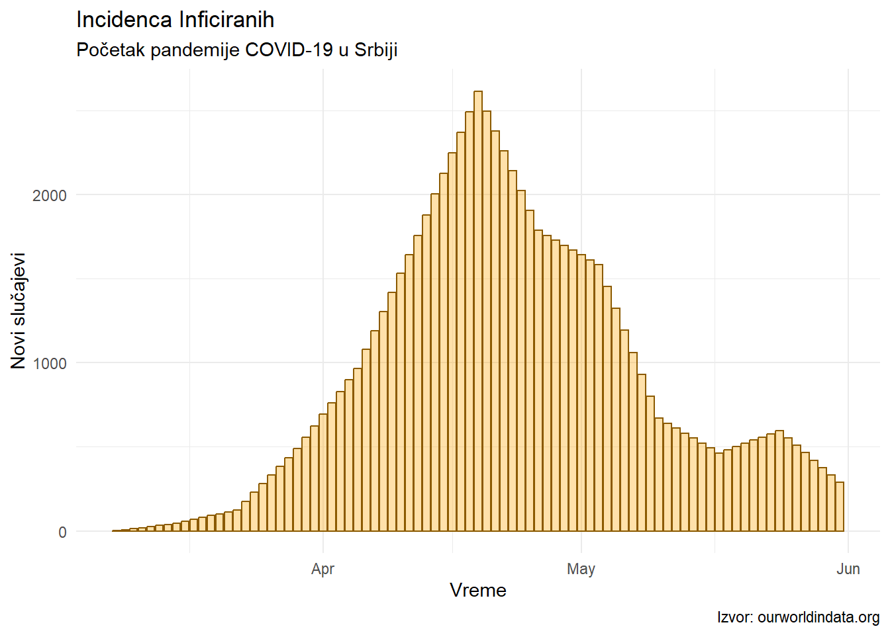
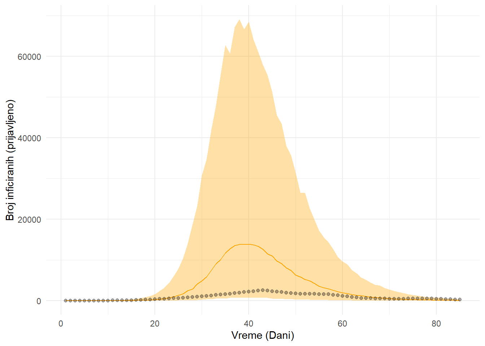

flowchart LR A[Podložni]-->|stopa infekcije|B[Inficirani]-->|stopa oporavka|C[Oporavljeni]
1 Uvod
Recimo da želimo da iskoristimo naše naučno znanje da objasnimo biološko ponašanje epidemije. Konstruisanje naučno inspirisanog biološkog modela ima velike prednosti, jedna od kojih je predviđanje intervencija na sistemu koji opisuje (N. Grubor, 2023). Kada se infektivni agens uvede u populaciju koje je podložna infekciji, on će se širiti sve do momenta dostizanja kritične tačke gde je malo verovatno da će inficiran čovek sresti nekog ko nije već preležao bolest. U tom trenutku epidemija usporava i agens u toj populaciji izumire (ako nema neki mehanizam dormatnog preživljvanja). Tu kritičnu tačku nazivamo kolektivnim imunitetom, i ona zavisi od mnogih parametara samog agensa. Dodatne komplikacije našem naučnom opisu pretstavljaju prisustvo različitih imunskih sistema kod ljudi, inkubacioni period infektivnog agensa, državne mere prevencije širenja epidemije i programi vakcinacije — jer menjaju način na koji se stvaraju podaci. Pored komplikovanog biološkog sistema, imamo i statističke probleme, gde je tačan broj inficiranih osoba nepoznat. Poslušaćemo savet matematičara Džordža Polje koji kaže da kad imamo kompleksan problem, probamo da identifikujemo i rešimo njegov najjednostavniji oblik (Polya & Conway, 2015).
2 Jednostavan model epidemije
Modeli zaraznih bolesti potpadaju pod veliku grupu kompartment modela (Chatzilena i ostali, 2019). Tipičan kompartment model pretpostavlja jednu jednoličnu grupu entiteta (ljudi, hemikalija) koja prelazi iz jednog kompartmenta (stanja) u sledeće. U našem slučaju, to mogu biti ljudi podložni infekciji koji postaju inficirani prenosioci, koji se zatim oporavljaju (Figura 1). Napravićemo nekoliko jakih pretpostavki kako bismo mogli da se bavimo jednostavnijim oblikom ovog problema. (\(i\)) Pretpostavićemo da je populacija homogena i da su kontatki između svih osoba jednako mogući, (\(ii\)) da ne postoji inkubacioni period, (\(iii\)) da se jednom oporavljena osoba ne može zaraziti opet istim agensom.
Prelazak podložnih u inficirane (pa u oporavljenje) zavisi od samog broja podložnih, koji se menja u vremenu. Sistemi koji se menjaju u vremenu se mogu opisati diferencijalnim jednačinama. Diferencijalne jednačine, za razliku od klasničnih jednačina čije rešenje je broj (\(f(x) = 5\)), imaju kao rešenje neku drugu funkciju (\(f(x) = f'(x)\)) koja opisuje kako se unos (\(x\)) menja u zavisnosti od toga šta je uopšte uneto.
Sistem opisan u Figura 1 može se predstaviti sledećim sistemom jednačina,
\[ S' = -\beta \frac{I}{N} S, \; \; \; I' = \beta \frac{I}{N} S - \gamma I, \; \; \; R' = \gamma I \tag{1}\]
gde je:
- \(S'\) funkcija čije rešenje daje broj podložnih u bilo kom trenutku vremena,
- \(I'\) funkcija čije rešenje daje broj inficiranih u bilo kom trenutku vremena,
- \(R'\) funkcija čije rešenje daje broj oporavljenih u bilo kom trenutku vremena,
- \(N\) veličina populacije,
- \(S\) broj podloznih ljudi koji mogu da dobiju infekciju,
- \(I\) broj ljudi koji su trenutno inficirani,
- \(R\) broj ljudi koji su se oporavili,
- \(\beta \; [\frac{1}{\text{osoba} \times \text{vreme}}]\) konstanta koja predstavlja infektivnost agensa,
- \(\gamma \; [\frac{1}{\text{vreme}}]\) konstanta koja predstavlja stopu oporavka ljudi od infekcije.
2.1 Intuicija
Kako bismo stekli malo intuicije o Jednačina 1, pogledaćemo njene sastavne delove (Mihaljevic, 2016). Proporcija inficiranih ljudi u populaciji je \(\frac{I}{N}\). Verovatnoća da neko iz opšte populacije postane inficiran je \(\beta \frac{I}{N}\). Zbog toga što neće svaki kontakt zasigurno izazvati infekciju, već će uspešna zaraza biti jednaka nekoj proporciji kontakata u zavisnosti od tipa agensa. Kako bismo opisali infektivnost različitih agenasa dodaćemo konstantu \(\beta\) koja će nam dati pomenutu proporciju. Kada je \(\beta < 1\), agens je slabo infektivan, i broj inficiranih je “praktično” manji nego koliko ih je zapravo, i obrnuto kada je \(\beta > 1\). Ono što nam preostaje je da pomnožimo sve sa \(S\) kako bismo dali šansu svakom podložnom da bude izložen toj proporciji inficiranih. Minus ispred proizvoda označava da funkcija treba da smanjuje broj podložnih tokom vremena jer oni prelaze u sledeći kompartman. Sve zajedno imamo:
\[ S' = -\beta\frac{I}{N} S \tag{2}\]
Kako broj inficiranih u vremenu (\(I'\)) raste sa padom podložnih on je jednak identičnom proizvodu iz Jednačina 2, sa dodatkom \(\gamma\) koeficijenta. \(\gamma\) predstavlja stopu oporavka inficiranih i govori nam o njihovoj brzini prelaska u kompartman oporavljenih. Ukupan broj inficiranih jednak razlici prelaska podložnih u inficirane i prelaska (izlaska) inficiranih u oporavljenje.
\[ I' = \beta \frac{I}{N} S - \gamma I \tag{3}\]
Na kraju, broj oporavljenih je jednak brzini prelaska inficiranih u oporavljene:
\[ R' = \gamma I \tag{4}\]
Dinamični model opisan uz pomoć Jednačina 1 je poznat po imenu SIR (Susceptible-Infected-Recovered) i predstavlja najjednostavniji naučni model zarazne epidemije. Ono što je interesantno je način na koji smo uspeli da predstavimo biološke karakteristike epidemije matematičkim opisom promena u populaciji. Pre nego što pogledamo implikacije modela, treba napomenuti još neka ograničenja:
- \(N\), ukupna populacija je konstantna. Model ignorise umiranje i rađanje,
- \(R\), oporavljeni ljudi nemaju mogućnost reinfekcije (što znamo da je moguće),
- \(\beta\) i \(\gamma\), infektivnost i stopa oporavka su konstantni, što znamo su isto dinamične karakteristike,
- Populacija je homogena,
- Ljudi dospevaju u kontakt sa svima uniformno (jednako) nasumično (homogeno mešanje), i oporavak je eksponencijalan sa aritmetičkom sredinom \(\frac{1}{\gamma}\)
- Ako je populacija dovoljno velika, diskretan broj ljudi možemo zameniti sa kontinuiranom aproksimacijom.
2.2 Numerička rešenja diferencijalnih jednačina
Uz pomoć paketa za resavanje sistema diferencijalnih jednačina, i proizvoljno zadatih početnih vrednosti za \(S(0) = 1\), \(I(0) = 0.01\) (1% populacije naglo dobije infekciju), i \(R(0) = 0\), kao i \(\beta = 2.0 \frac{1}{\text{osoba} \times \text{dan}}\) i \(\gamma = 1.0 \frac{1}{\text{dan}}\) možemo dobiti dinamično rešenje u vremenu (Soetaert i ostali, 2010). U praksi, \(\beta\) i \(\gamma\) se moraju proceniti analizom podataka sa terena, opservacijom broja novoinficiranih tokom vremena.
2.3 Reproduktivni broj \(R_0\)
Popularna mera u ponašanja epidemije je reproduktivni broj \(R_0\). Reproduktivni broj je definisan kao \(R_0 = \frac{\beta}{\gamma}\) i predstavlja odnos stopa infektivnosti i stopa oporavka. Posledica je da će se epidemija širiti dokle god je \(R_0 > 1\), jer je broj kojim nastaju novoinficirani brži od broja kojim ljudi stiču imunitet. Tako da svaka strategija koja smanjuje brzinu novoinficiranih (smanjenje kontakta, distanciranje) ili povećava broj oporavljenih/imunih (vakcinacija) će uticati na \(R_0\). Kada reproduktivni broj padne ispod 1, epidemija usporava i prestaje. Kao što se vidi sa Figura 2, epidemija može prestati i bez da potpuna populacija postane imuna na infektivni agens. Većina može da zaštiti manjnu, što je veoma bitno za fragilni deo populacija poput starijeg ili imunokompromitovanog1 dela populacije.
3 Primer na prvom COVID-19 talasu u Srbiji
Pokušaćemo da procenimo reproduktivni broj tokom prvog talasa pandemije u Srbiji. Ograničićemo se na početak pandemije čisto iz praktičnih razloga. Podatke koje ćemo koristiti su prikazani na Figura 3. Naš početni model će biti veoma prost i odgovaraće SIR modelu iz Jednačina 1. Kako bismo statistički ocenili različite nepoznate parametre, upotrebićemo programski jezik koji omogućava probabilističku analizu podataka Stan (2024).

3.1 Prvi pokušaj
Cilj nam je da saznamo reproduktivni broj \(R_0\) na početku pandemije u Srbiji. Kako se ne bi pogubili u tehničkim detaljima, opisacu ukratko proceduru pronalaženja ovog nepoznatnog parametara (Chatzilena i ostali, 2019). Ono što je potrebno da definišemo je početnu populaciju u Srbiji (\(N\)), broj prijavljenih infekcija, kao i početne brojeve za svaki od kompartmana (\(S, I, R\)). Za svaki broj inficiranih u danu će model napisan u Stan-u inicirati neko nasumično \(\beta\) i \(\gamma\), koje su zasnovano na našim prethodnim ubeđenjima o mogućim veličinama tih koeficijenata. Na osnovu svih ovih podataka ćemo, nakon numerićke aproksimacije, kao rešenje Jednačina 1 dobiti očekivane vrednosti inficiranih za svaki dan pandemije. Korak po korak, Stan predlaže parametere koji su najkonzistentniji sa opserviranim podacima, i to u proporciji sa time koliko su verovatni. Nakon završetka, dobijamo vrednosti koje su najverovatnije dovele do podataka koje smo uočili.2 Figura 4 pokazuje kako izgledaju predviđanja iz SIR modela u odnosu na podatke koje imamo.

Kada se podaci ne poklapaju sa modelom kao u Figura 4, mogući su razni uzroci; od neispravnog koda do pogrešnog modela. Ako pretpostavimo da nam je kod uredu, hipoteza o pogrešnom modelu je najverovatnija. Jedna od lepih stvari kod naučno inspirisanih modela je da kada ne rade, obično nas nauče nešto — makar to bilo da su previše jednostavni, kao što je naš slučaj. Već smo imali neke ideje kako da poboljšamo ovaj model na početku članka. Probaćemo neke od njih.
3.2 Proširenje modela
Imamo nekoliko očiglednih problema:
- Broj inficiranih koji je testiran gotovo sigurno nije realan broj stvarno inficiranih u populaciji, tj. imamo greške u merenju — što od same nepreciznosti testa, što od samoselekcije pacijenata koji su otišli na testiranje.
- Država je vrlo brzo nakon početka pandemije uvela mere distanciranja i izolacije inficiranih, ovo zasigurno utiče na parametar \(\beta\).
- Poznato je iz laboratorijskog istraživanja da je inkubacija SARS-CoV-2 virusa u proseku oko 5 dana, to možemo da iskoristimo.
- Broj inicijalno inficiranih je nepoznat, možemo i inicijalni broj inficiranih da predstavimo distribucijom mogućih vrednosti, a ne jednim brojem.
Takođe, ono što će naš model pribiližiti realnosti je da uključimo i period inkubacije upotrebom SEIR (Susceptible-Exposed-Infected-Recovered) modela. SEIR model je prvi kompleksniji epidemiološki model od SIR-a (Figura 5).
flowchart LR A[Podložni]-->|stopa infekcije|E[Izloženi]-->|dužina inkubacije|B[Inficirani]-->|stopa oporavka|C[Oporavljeni]
Parametri proširenog modela su dati u Tabela 1, dok su posteriorne predikcije prikazane na Figura 6. Nakon upoređivanja predviđanja našeg novog modela sa opserviranim podacima, vidimo da je ovaj model mnogo bolji opis događaja. Naravno, model se znatno može upotrebiti uvršćavanjem podataka o senzitivnosti i specifičnosti COVID-19 testa koji je korišćen, kao i dodavanjem eksplicinog kompartmana za populaciju u karantinu. Svakako, ova dodatna proširenja prevazilaze obim ovog članka.
| Variable | Mean | SD | 2.5% | 97.5% |
|---|---|---|---|---|
| beta | 1.72 | 0.35 | 1.09 | 2.46 |
| gamma | 1.23 | 0.28 | 0.74 | 1.78 |
| R0 | 1.41 | 0.14 | 1.23 | 1.75 |
| recovery_time | 0.86 | 0.21 | 0.56 | 1.36 |
| incubation_time | 1.56 | 0.68 | 0.69 | 3.29 |
4 Zaključak
Mehanistički opis fenomena je zapravo naučni cilj. Kada imamo opis koji može dobro da predviđa podatke, i uzgred ima tačnu mehaničku strukturu, možemo da ga iskoristimo da otkrijemo šta će se desiti sa sistemom kada preduzmemo neku intervenciju. Naravno, priroda je kompleksna, i potrebna je interdisciplinarna sinteza znanja kako bismo došli do dobrog biološkog opisa. Neverovatan je akademski napredak omogućiti naučnicima iz svih domena da pišu kompleksme modele. Treba ih iskoristiti.
Reference
Chatzilena, A., Van Leeuwen, E., Ratmann, O., Baguelin, M., & Demiris, N. (2019). Contemporary Statistical Inference for Infectious Disease Models Using Stan. Epidemics, 29, 100367. https://doi.org/10.1016/j.epidem.2019.100367
Mihaljevic, J. (2016, listopad 27). Estimating Transmission by Fitting Mechanistic Models in Stan. Disease Ecology; Evolution. https://jrmihalj.github.io/estimating-transmission-by-fitting-mechanistic-models-in-Stan/
N. Grubor, N. (2023). Priče iza Podataka: Model za Otkrivanje Gravitacije. https://nikola-grubor.github.io/myblog/posts/sr/gravitacija
Polya, G., & Conway, J. H. (2015). How to Solve It: A New Aspect of Mathematical Method. Princeton University Press.
Soetaert, K., Thomas Petzoldt, & R. Woodrow Setzer. (2010). Solving Differential Equations in R: Package deSolve. 33. https://doi.org/10.18637/jss.v033.i09
Stan Development Team. (2024). RStan: the R interface to Stan. https://mc-stan.org/
Fusnota
Navođenje
BibTeX navođenje:
@online{n. grubor2024,
author = {N. Grubor, Nikola},
title = {Epidemiološki modeli uz pomoć diferencijalnih jednačina},
date = {2024-04-08},
url = {https://nikola-grubor.github.io/myblog/posts/sr/sir},
langid = {sr-Latn}
}
Za pripisivanje autoru, molimo navedite ovaj rad sa:
N. Grubor, N. (2024, April 8). Epidemiološki modeli uz pomoć
diferencijalnih jednačina. https://nikola-grubor.github.io/myblog/posts/sr/sir